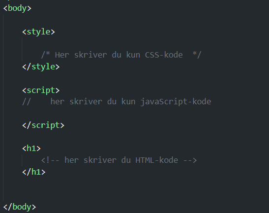

Intern koding i et HTML dokument
Når vi skal skrive javaScript i et HTML-dokument må koden ligge inne i et script-element. Det er akkurat det samme som når vi skriver CSS kode i et style-element. Et script-element består av taggen script. All kode som ligger mellom starttaggen og sluttaggen må være javaScript-kode.
Variabler i JavaScript
I JavaScript kan vi definere verdier som variabler eller konstanter. Forskjellen på disse er at verdien til en variabel kan endre seg i løpet av kjøring av programmet, for eksempel en variabel for antall poeng en spiller har, mens en konstant ikke kan endre seg. eksempel på en kosntant varibel kan være maksimalt antall tegn det er lov å skrive i en melding. Vi definerer variabler med kodeordet let og konstanter med kodeordet const. Noen ganger vil du kanskje se at javaScript bruker kodeordet var. Det var vanlig i tiden før let og const ble innført i javaScript.